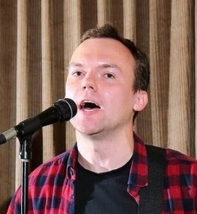

I am Anton Kuznietsov, a software engineer with over a decade in the IT industry — from C++ game development at Gameloft to more than seven years in test automation, currently at Software Aspekte.
Today my focus is full stack development with Python at its core, backed by React, Next.js, Node.js, and a solid grounding in databases, AWS, and Docker.
Before engineering, I sang as a baritone in the Kharkiv Philharmonic Choir, and music still finds its way into my work — including a web synthesizer studio and a browser billiards game you can try on this site.
I hold a degree in Mathematics from Kharkiv Karazin National University.
This page is a work in progress — new projects and details are on the way.